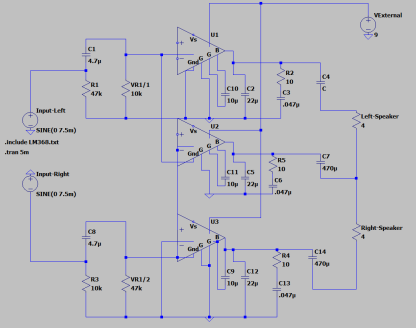

01
Simulation in LTspice
I began with an electrical model of the amplifier. This established the expected signal behavior and gave me a reference before committing to a schematic and PCB.
Changing a simulated circuit is inexpensive; changing a fabricated board is not. Starting here reduced the likelihood of carrying a basic design error into hardware.
